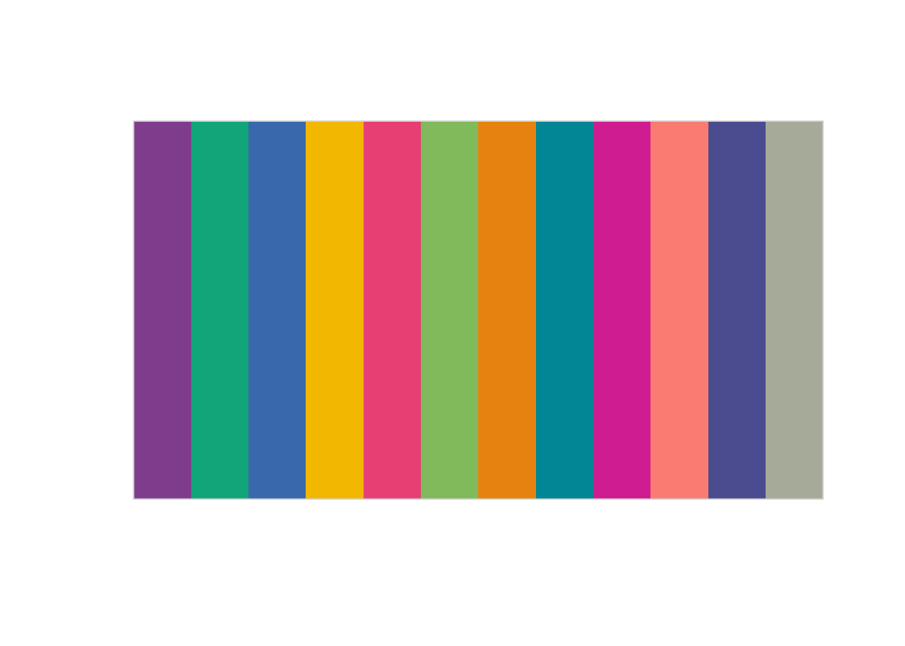
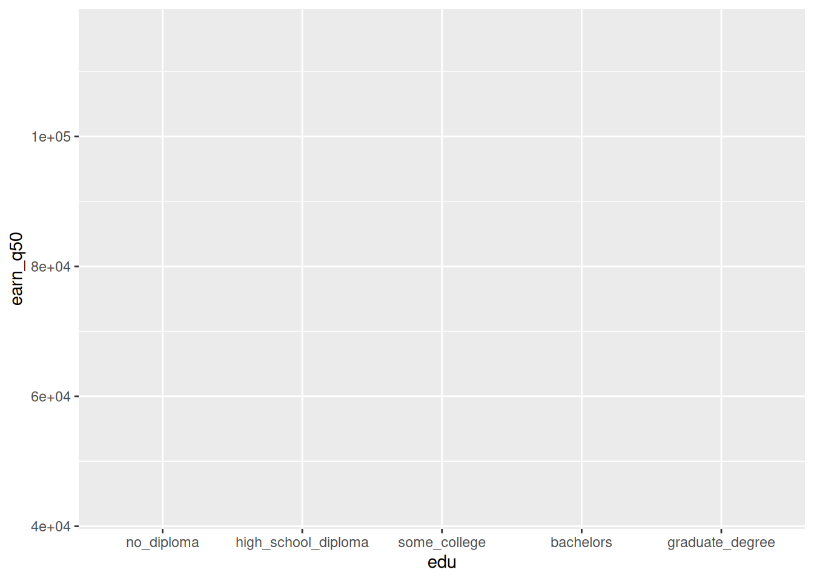
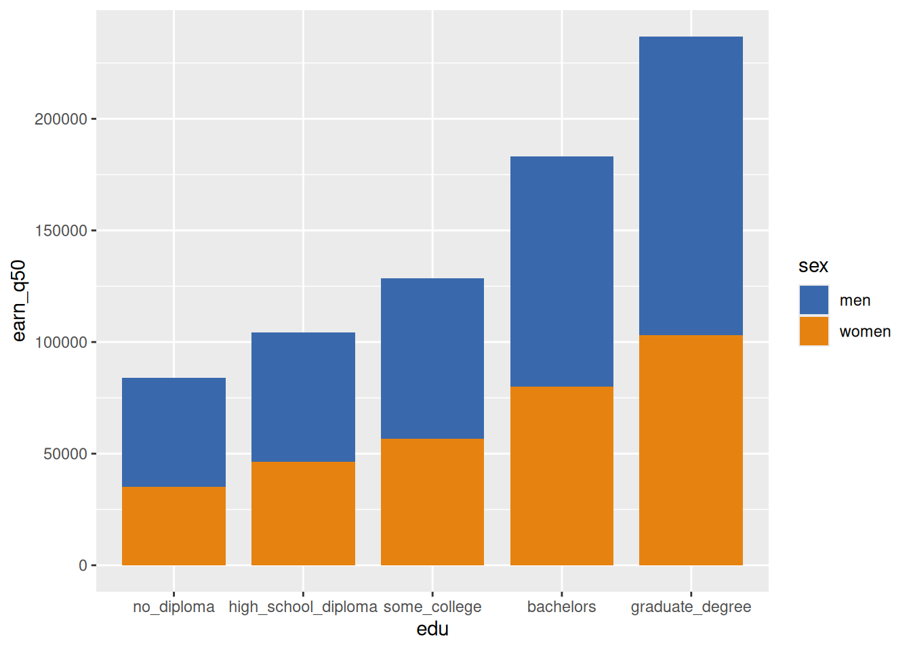
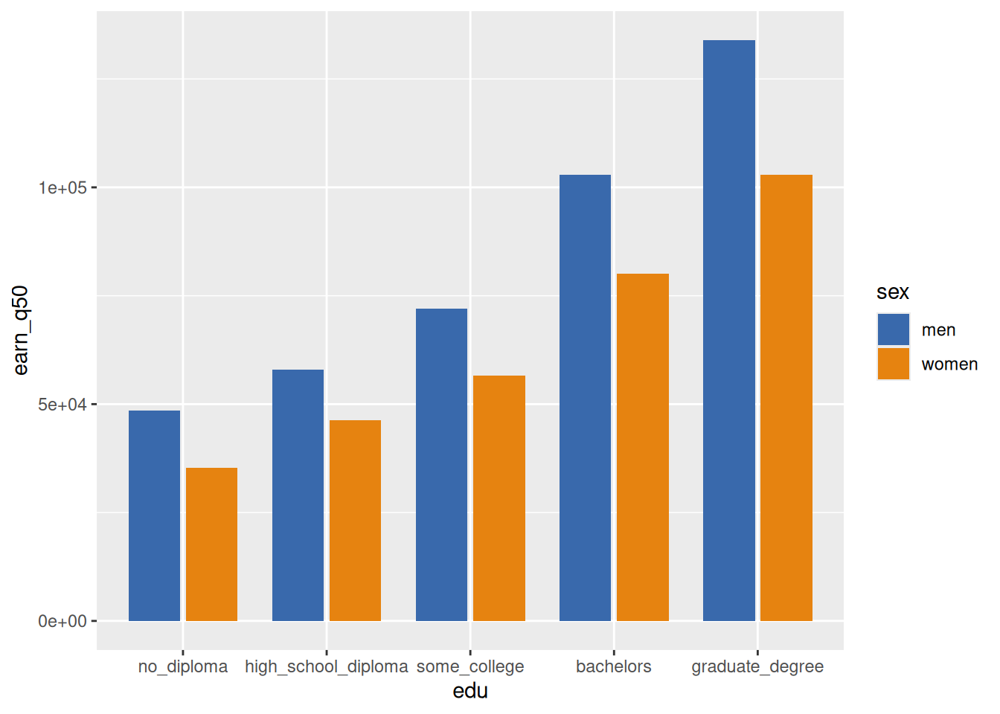
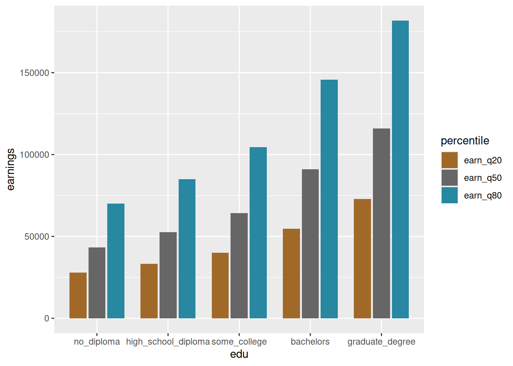
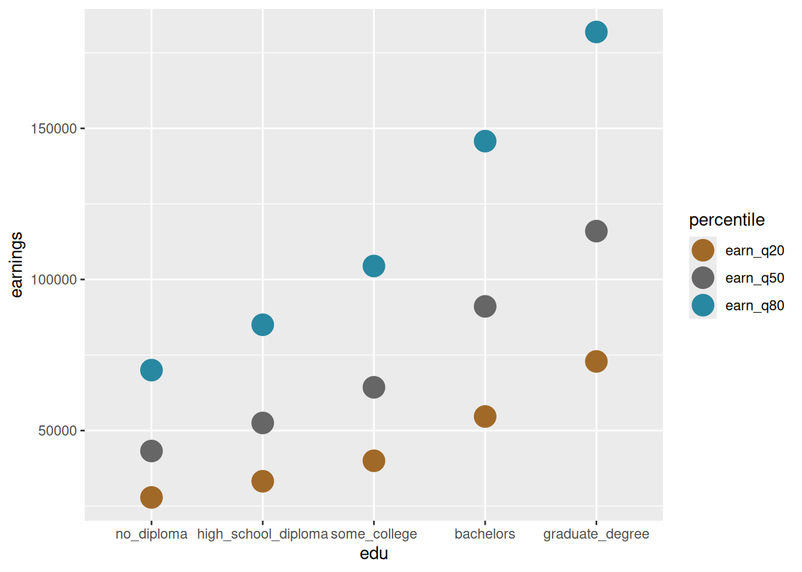
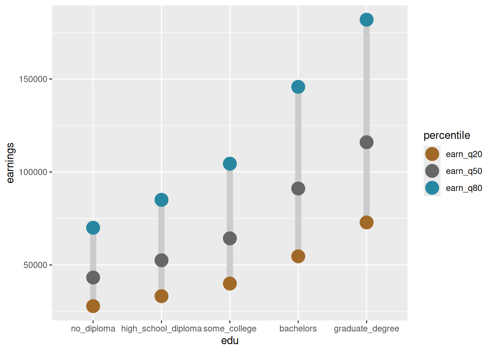

These are the charts from the notes on visual encodings, but focused on the code. Otherwise, as always, the code for this whole site is on GitHub.
library(ggplot2)library(dplyr)# pull a qualitative palette from carto colorsqual_pal <- rcartocolor::carto_pal(name ="Bold")# colorspace::swatchplot(qual_pal)gender_pal <- qual_pal[c(3, 7)]# pull a diverging palette but make center value graydiv_pal <- rcartocolor::carto_pal(n =3, name ="Earth")div_pal[2] <-"gray40"sex_x_edu <- justviz::wages |>filter(dimension %in%c("by_edu", "by_sex_x_edu"), status =="full_time") |>select(sex, edu, earn_q20, earn_q50, earn_q80)sex_x_edu
sex
edu
earn_q20
earn_q50
earn_q80
total
no_diploma
27868
43234
70000
total
high_school_diploma
33227
52520
85018
total
some_college
40000
64311
104451
total
bachelors
54655
91091
145771
total
graduate_degree
72873
116000
181895
men
no_diploma
30881
48582
75145
men
high_school_diploma
36436
58000
92644
men
some_college
42874
72057
115382
men
bachelors
60727
102938
162199
men
graduate_degree
81100
134000
202749
women
no_diploma
21617
35264
57928
women
high_school_diploma
30700
46322
72873
women
some_college
36436
56616
92685
women
bachelors
50000
80160
126000
women
graduate_degree
68015
102938
157891
Palettes are just vectors of colors, usually hex codes. For example, gender_pal is just #3969AC, #E68310. There are functions to view them: you already have colorspace installed, so call colorspace::swatchplot(gender_pal) to view the colors.
colorspace::swatchplot(qual_pal)

Scales only, no geometries: inside ggplot’s aes (aesthestics) call, assign education to the x scale and median earnings to the y scale. Let’s call this chart 1.
sex_x_edu |>filter(sex =="total") |>ggplot(aes(x = edu, y = earn_q50))

Same as chart 1, but add a point geometry (see ?geom_point)
Modify chart 2 to also map sex onto the fill aesthetic. Note that there are independent aesthetics for color and fill, and most larger shapes like columns will default to a fill but not a color (color would provide an outline), while most smaller shapes like points and lines have a color only. (If you look at the standard codes for point shapes, some have both a fill and an outline color; this is very useful in some cases but we won’t get into it now.) Tl;dr if you try to set what you think of as color and don’t see it change, it might actually be the fill.
Add a manual fill scale so we can use the palette we pulled out earlier.
sex_x_edu |>filter(sex !="total") |>ggplot(aes(x = edu, y = earn_q50, fill = sex)) +geom_col(width =0.8) +scale_fill_manual(values = gender_pal)

Bars shouldn’t be stacked, so set the position to dodge them, i.e. put them next to each other. Each bar is a combination of x/education and fill/sex. position_dodge2 puts a nice lil gap between the bars at each x value, whereas position_dodge will have them smooshed together.
sex_x_edu |>filter(sex !="total") |>ggplot(aes(x = edu, y = earn_q50, fill = sex)) +geom_col(width =0.8, position =position_dodge2()) +scale_fill_manual(values = gender_pal)

Instead of medians by sex, now show values at each of 3 percentiles. 20th, 50th, and 80th percentiles each have their own column in the original dataset, but if we want to assign percentile to a fill, we need a single variable that has those percentile breaks and another single variable that has values. This is called tidy data, coined by the main dev of ggplot. The tidyr package helps get data into the correct shape for the tidy data/grammar of graphics paradigm.
Now plot that data with earnings on y and percentile on fill. Call it chart 3
ptiles_tidy |>ggplot(aes(x = edu, y = earnings, fill = percentile)) +geom_col(width =0.8, position =position_dodge2()) +scale_fill_manual(values = div_pal)

Chart 3 but with points instead of bars. Note that this requires switching from fill to color as our aesthetic.
ptiles_tidy |>ggplot(aes(x = edu, y = earnings, color = percentile)) +geom_point(size =6) +scale_color_manual(values = div_pal)

Add a path geometry to join the points within each education level and across percentiles. Put it before the point layer so points are on top.
ptiles_tidy |>ggplot(aes(x = edu, y = earnings, color = percentile)) +geom_path(color ="gray80", linewidth =3) +geom_point(size =6) +scale_color_manual(values = div_pal)

Add a variable for percentile type, whether it’s 50th percentile (median) or one of the others (we’ll call them endpoints, I don’t have a better name). This gives us a column to assign more aesthetics to so medians stand out from 20th & 80th percentiles and have more visual importance.
Now assign point size to percentile type (note that you can do an aes call within any geom; since it only affects points I’ve put it there). Add a manual size scale.
Add a third aesthetic to the points: percentile types should get different shapes as well. This requires a group aesthetic to make clear how the paths should be grouped. Look up the shape codes to find IDs of shapes you want. Some of these shapes are filled, so set both fill and color as the same scale (try taking out the aesthetics argument of the color scale). Add a manual shape scale.